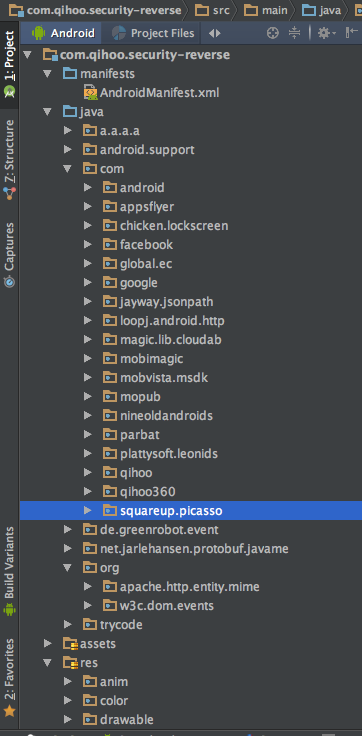

近期做充电锁屏需求，在研究竞品的过程中，发现360Security能够自动调起系统的解锁页，感觉很神奇。
首先想到的是系统提供了解锁意图的广播或者Intent，接到后会调起解锁页，但是经过调研后并没有找到。所以只能逆向一下360Security，看它怎么搞出来的。
1. 下载apk
这里记一个很方便能够搜索下载apk的网站：http://www.coolapk.com/(酷安网)。
搜索360Security，下载得到com.qihoo.security_2266.apk。
2. 使用apk-tool反编译
反编译得到资源和smali代码等，备用。目录结构如下，它也是两个dex包的。
com.qihoo.security_2266-O
├── AndroidManifest.xml
├── apktool.yml
├── assets
├── build
├── lib
├── original
├── res
├── smali
├── smali_classes2
└── unknown
3. 使用jadx-gui导出gradle项目
虽然jadx-gui已经很好用了，但在查找和跳转上还是不够方便，好在它提供了导出gradle项目的功能。导出gradle项目以后，我们用AndroidStudio导入项目，AndroidStudio会自动创建索引，方便我们阅读代码。

能够看到360Security除了使用一堆广告库以外，还用了Volley、json-path、loopj、Picasso、EventBus、ProtocalBuffer开源库，没有太多功能重复和混乱的地方，算是很优质的结构。
4. 找到隐藏锁屏的逻辑
首先我们要找到锁屏的Activity。在锁屏时使用adb shell dumpsys activity activities,得到以下信息：
mFocusedActivity: ActivityRecord{b97dda5 u0 com.apusapps.launcher/.launcher.ApusLauncherActivity t2932}
mFocusedStack=ActivityStack{2a9b3162 stackId=0, 1 tasks} mLastFocusedStack=ActivityStack{2491ee01 stackId=1, 18 tasks}
mSleepTimeout=false
mCurTaskId=2969
mUserStackInFront={}
mActivityContainers={0=ActivtyContainer{0}A, 1=ActivtyContainer{1}A}
当前Activity竟然是ApusLauncher，那就得出360Security是使用悬浮窗做锁屏的结论，那么肯定有一个Service来管理锁屏的addView和removeView。
找到这个Service：com.chicken.lockscreen.floatview.LockScreenFloatViewService。
public class LockScreenFloatViewService extends Service {
private Handler a;
private WindowManager b;
private LockScreenRootView c;
*********省略********
private void c() {
if (!f.a(this)) {
DismissActivity.a((Context) this);
}
c.p().a(LockScreenTypeEnum.NONE);
this.d = null;
SystemStatusObserver.getInstance.removeSystemStatusChangeListener(LockScreenViewManager.getInstance, this.e);
try {
LockScreenViewManager.getInstance.onScreenLockViewDestory(this);
} catch (Exception e) {
}
if (this.c != null) {
this.c.a();
}
try {
// 隐藏锁屏
this.b.removeView(this.c);
} catch (Exception e2) {
}
this.c = null;
JustGo.a((Context) this);
}
*********省略********
}
很容易理解，这里定义了一个WindowManager b，一个LockScreenRootView c，那么显示锁屏就是b.addView(c, layoutParams),隐藏锁屏是b.removeView(c)，这在下面的方法c()里得到了体现。
容易看出，紧接着的JustGo.a((Context) this);就有很大可能是关键点。
5. 修改smali并重建apk
JustGo.a()即通过Intent打开JustGo这个Activity。
public static void a(Context context) {
boolean a = a(context, false);
Log.e("JustGo", "=======finish======isSecurity-----" + a);
if (a) {
Intent intent = new Intent(context, JustGo.class);
intent.addFlags(268435456);
context.startActivity(intent);
}
}
由于JustGo的代码比较难读，为了节省时间，可以去smali里注释掉context.startActivity(intent)，来验证JustGo是否为关键。
.line 106
new-instance v0, Landroid/content/Intent;
const-class v1, Lcom/chicken/lockscreen/activity/JustGo;
invoke-direct {v0, p0, v1}, Landroid/content/Intent;-><init>(Landroid/content/Context;Ljava/lang/Class;)V
.line 107
const/high16 v1, 0x10000000
invoke-virtual {v0, v1}, Landroid/content/Intent;->addFlags(I)Landroid/content/Intent;
.line 108
invoke-virtual {p0, v0}, Landroid/content/Context;->startActivity(Landroid/content/Intent;)V
上面的smali是启动Activity的过程，只需要把最后一行删除，使用apk-tool重新打包签名。跑起来以后，发现调起解锁页的功能消失了，那么就肯定是JustGo这个Activity起的作用。
6. 整理代码
接下来需要整理JustGo的代码，看看到底为啥它能自动调起系统锁屏页。把JustGo这个无意义的名字改成了DismissKeyguardActivity，整理后代码如下：
import android.app.Activity;
import android.content.Context;
import android.content.Intent;
import android.os.Bundle;
import android.os.Handler;
import android.view.ViewTreeObserver;
import static android.view.Window.FEATURE_NO_TITLE;
import static android.view.WindowManager.LayoutParams.FLAG_DISMISS_KEYGUARD;
import static android.view.WindowManager.LayoutParams.FLAG_FULLSCREEN;
/**
* We want show unlock pattern view automatically, so we create this activity with
* FLAG_DISMISS_KEYGUARD.
*/
public class DismissKeyguradActivity extends Activity {
private Handler handler= new Handler();
private Runnable runnable = new Runnable() {
public void run() {
finish();
}
};
private ViewTreeObserver.OnPreDrawListener onPreDrawListener;
protected void onCreate(Bundle bundle) {
super.onCreate(bundle);
requestWindowFeature(FEATURE_NO_TITLE);
getWindow().addFlags(FLAG_DISMISS_KEYGUARD | FLAG_FULLSCREEN);
onPreDrawListener = new ViewTreeObserver.OnPreDrawListener() {
public boolean onPreDraw() {
getWindow().getDecorView().getViewTreeObserver().removeOnPreDrawListener(onPreDrawListener);
handler.postDelayed(runnable, isKeyguardSecured(DismissKeyguradActivity.this, false) ? 1000 : 0);
return true;
}
};
getWindow().getDecorView().getViewTreeObserver().addOnPreDrawListener(onPreDrawListener);
}
public static void startSelfIfKeyguardSecured(Context context) {
if (isKeyguardSecured(context, false)) {
Intent intent = new Intent(context, DismissKeyguradActivity.class);
intent.addFlags(Intent.FLAG_ACTIVITY_NEW_TASK);
context.startActivity(intent);
}
}
}
整理后发现，android.view.WindowManager.LayoutParams.FLAG_DISMISS_KEYGUARD这个flag起了重要作用。
7. FLAG_DISMISS_KEYGUARD
我们知道，FLAG_DISMISS_KEYGUARD会使普通系统锁屏消失，这一点从JavaDoc注释里可以了解到。但是360Security利用了它更不为人知的一面：当系统为安全锁屏（存在密码）时，带有FLAG_DISMISS_KEYGUARD标记的Activity启动会触发解锁页的调起。
至于FLAG_DISMISS_KEYGUARD触发解锁页调起的流程，将单独开一篇文章，从源码层面分析。